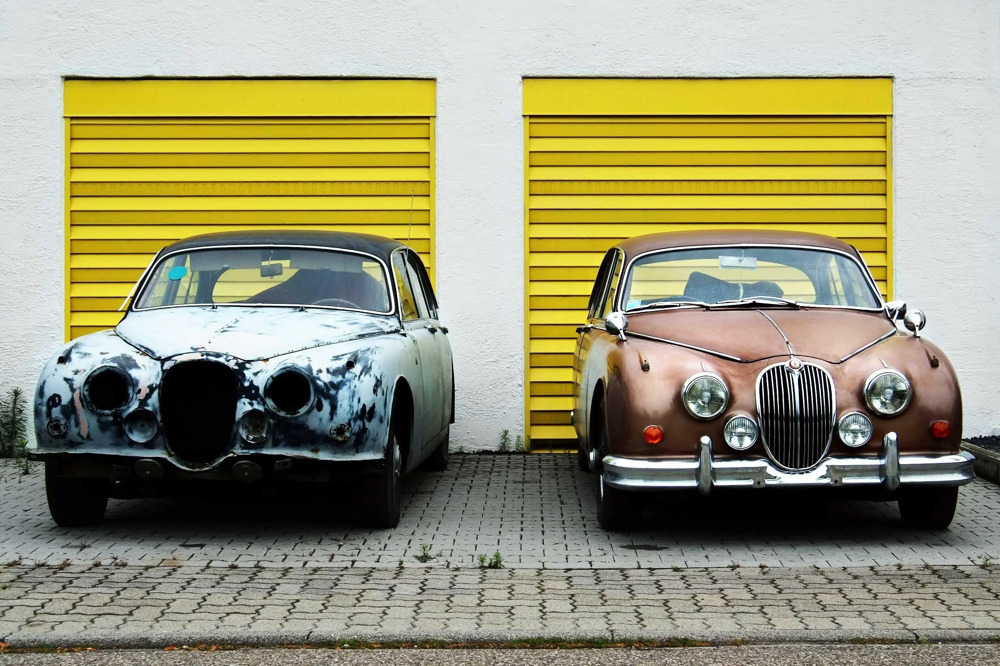

Introduction
The text on a web page wraps in case of overflow but this is not the case with images.
If an image is wider than the available screen, it will overflow and the user is forced to scroll to see it.
Why?
"You build a webpage with a large hero image — looks great on a 27" monitor. But on a phone, the browser downloads that same 4MB image, squishes it to 400px wide, and your visitor burned through their data plan just to see a tiny photo. Meanwhile, on a retina screen, your image looks blurry because it does not have proper resolution."
Three problems that can be solved by responsive images:
- Flexibility: image fit its container at any screen size
- Resolution switching: right image file for the right screen size/density
- Art direction: different image crop or composition for different screens
Flexibility
- Below image is way bigger than its containing element.
- We can use some CSS properties to make sure that the image fits inside its containing element
- To make sure that the image fits properly in its containing element we can use following css rule.
/* Copy below CSS code and paste in the CSS file */
.sample-image {
display: block;
width: auto;
height: auto;
max-width: 100%
}

- There are other scenarios where container size does not match the content's natural size.
- For example, profile cards, product card - needs consistent image sizes regardless of original image dimension
- To make the image fit in the container we can use object-fit property.
- Values that can be assigned to object-fit
- contain:The entire image is made to fit in the box while maintaining the aspect ratio. If the aspect ratio of box does not match with aspect ratio image then image will be "letterboxed" or "pillerboxed".
- cover:Image will be scaled to fill the box while maintaining aspect ratio. If image is bigger than box then it will be clipped.
- fill:Image will be scaled to fill the box, if the aspect ration of box does not match with aspect ratio of image then image will be stretched to fit. Aspect ratio of image is not maintained
- none:Image will be used in its original form.
- scale-down:
Image will be sized as if noneorcontainwere specified, whichever would result in a smaller size.
/* Copy below CSS code and paste in the CSS file */
/* Try different values of object-fit */
/* object-fit: contain | cover | fill | none | scale-down */
.sample-image-small {
display: block;
width: 100%;
height: 100%;
object-fit: fill
}
Resolution Switching
- How does browser loads an image?
When a browser parses your HTML, it starts downloading images before it has fully processed your CSS or JavaScript. At that moment, it doesn't know how wide your layout will actually be — it only knows the screen width. So we give it hints directly in the HTML.
- We use srcset and size to give hints to the browser, not commands, about the resource required by the webpage.
- srcset is an attribute of <img> element that is used to provide different possible sources of image for the browser to use.
<img
src="images/red-panda.webp"
srcset="images/red-panda-small.webp 768w,
images/red-panda-medium.webp 1024w,
images/red-panda-large.webp 1600w"
size="(max-width: 600px) 100vw, (max-width: 1024px) 50vw, 900px"
alt="Image of an auto-rickshaw"
>
Art Direction
- By using <img> with srcset we can provide different versions of an image which browser can choose from.
- But the final decision of which image to download is done by browser, based on various factors. There is always some uncertainity in this behavior.
- To fix this problem we can use <picture> element.
<picture>
<source media="(max-width: 768px)" srcset="images/picture-sample-small.webp" />
<source media="(max-width: 1200px)" srcset="images/picture-sample-medium.webp" />
<img src="images/picture-sample-large.webp" alt="sample image" />
</picture>